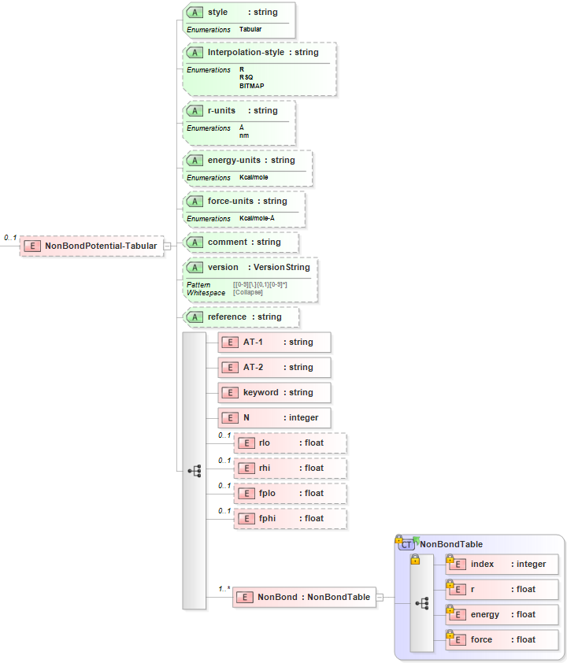

8.12. Tabular Non-Bond¶
8.12.1. Tabular Form¶
The tabular non-bond potential has the parameters:
Parameter |
Parameter Definition |
Units |
N |
Number of tabulated values |
N/A |
R |
Interatomic distance (least: rlo, greatest: rhi) |
length |
RSQ |
Interatomic distance squared (least: rlo, greatest: rhi) |
length^2 |
BITMAP |
Determines ordering of tabulated values (least: rlo, greatest: rhi) |
length |
FPRIME |
Derivatives of the force at the innermost (fplo) and outermost (fphi) bond lengths |
force/length length^2 |
The tabular non-bond potential has the tabulated values:
index |
r |
energy |
force |
i_1 |
r_1 |
e_1 |
f_1 |
… |
… |
… |
… |
i_N |
r_N |
e_n |
f_N |
8.12.2. XML Schema¶
The XML schema for the tabular non-ond potential has the following representation (design mode representation using Liquid XML Studio):
The relationship between the parameters/symbols and XML schema notations are given by:
Parameter Definition |
Parameter/Symbol |
Schema Notation |
Atom type of atom [i] |
\(i\) |
AT-1 |
Atom type of atom [j] |
\(j\) |
AT-2 |
Section identifying keyword |
N/A |
keyword |
Number of tabulated values |
N |
N |
Interatomic distance (least) |
R |
rlo |
Interatomic distance (greatest) |
R |
rhi |
Interatomic distance squared (least) |
RSQ |
rlo |
Interatomic distance squared (greatest) |
RSQ |
rhi |
Determines ordering of tabulated values (least) |
BITMAP |
rlo |
Determines ordering of tabulated values (greatest) |
BITMAP |
rhi |
Derivative of the force at the innermost |
FPRIME |
fplo |
Derivative of the force at the outermost |
FPRIME |
fphi |
Index |
index |
index |
Interatomic distance |
r |
r |
Energy |
energy |
energy |
Force |
force |
force |
The general attributes (describing the entire data set) are given by:
General Attributes |
Cardinality |
Value/Definition |
style |
Fixed |
Tabular |
Interpolation-style |
Required |
Enumerations specified in schema |
r-units |
Required |
Enumerations specified in schema |
energy-units |
Required |
Enumerations specified in schema |
force-units |
Required |
Enumerations specified in schema |
comment |
Optional |
Comment attached to parameter set |
version |
Optional |
Version number of parameter set |
reference |
Optional |
Reference attached to parameter set |
Note that an XML document will be rejected from being entered into the WebFF database if a required attribute is left unspecified.